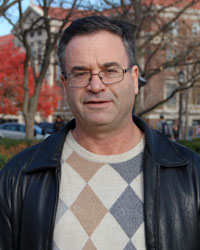

Sabre Kais Group
Quantum Information and Quantum Computation
Sabre Kais

Education
2022 - Present: Director, Center for Quantum Technology
2021 - Present: Distinguished Professor of Chemistry, Purdue University
2002 - Present: Professor of Chemical Physics, Department of Chemistry, Purdue University
2023 - Present : Professor of Electrical and Computer Engineering, Purdue University
2010 - Present: Professor of Physics, (Courtesy Appointment) Purdue University
2005 - Present: Professor of Computer Science, (Courtesy Appointment) Purdue University
2021 - 2023: Professor of Electrical and Computer Engineering, (Courtesy Appointment) Purdue University
2013 - 2016: Research Director of the Theory Group, Qatar Environment and Energy Research Institute (QUEERI)
1999 - 2002: Associate Professor, Department of Chemistry, Purdue University
1994 - 1999: Assistant Professor, Department of Chemistry, Purdue University
1989 - 1994: Research Associate, Department of Chemistry and Chemical Biology Harvard University with Prof. Dudley R. Herschbach
1984 - 1989: Ph.D. Hebrew University of Jerusalem, Adviser: Professor R.D. Levine and M. Cohen, Thesis Topic: An Algebraic Approach to Calculate Atomic and Molecular Properties
1983 - 1984: M. Sc. Hebrew University of Jerusalem, Adviser: Professor M. Cohen, Thesis Topic: Atoms in Strong Magnetic Fields: Perturbation Theory Approach
1979 - 1983: B. Sc. Hebrew University of Jerusalem
Recognitions
2021 Distinguished Professor of Chemistry, Purdue University
2021 Professor of Electrical and Computer Engineering, (Courtesy Appointment) Purdue University
2019 Herbert Newby McCoy Award - The most prestigious honor given by Purdue University for research in natural sciences
2014 Editorial Board of Scientific Reports
2013 Research Director of the Theory Group at QEERI
2013 External Research Professor at Santa Fe Institute
2012 Sigma Xi Research Award
2010 Professor of Physics (Courtesy Appointment) Purdue
2010 Visiting Professor Program, King Saud University
2010 Editorial Board of Papers in Physics
2008 Editorial Board of Molecular Physics
2007 Fellow of the American Association for the Advancement of Science
"For Outstanding creative contribution to theoretical chemistry, particularly the development of a finite size scaling approach to calculate quantum critical parameters for atomic, molecular and quantum dot systems"
2006 Fellow of the American Physical Society
"For the development of a finite-size scaling approach to calculate quantum critical parameters for atomic, molecular and quantum dot systems"
2005 - Present: Professor of Computer Science (Courtesy Appointment) Purdue
2005 Guggenheim Fellowship Award, 2005
"Studies in finite-size scaling theory"
2004 -2009 Purdue University Faculty Scholar
2000 Forchheimer Fellowship
1998 National Science Foundation - CAREER
1985 Landau Prize, Hebrew University of Jerusalem
1983 Farkash Prize, Hebrew University of Jerusalem